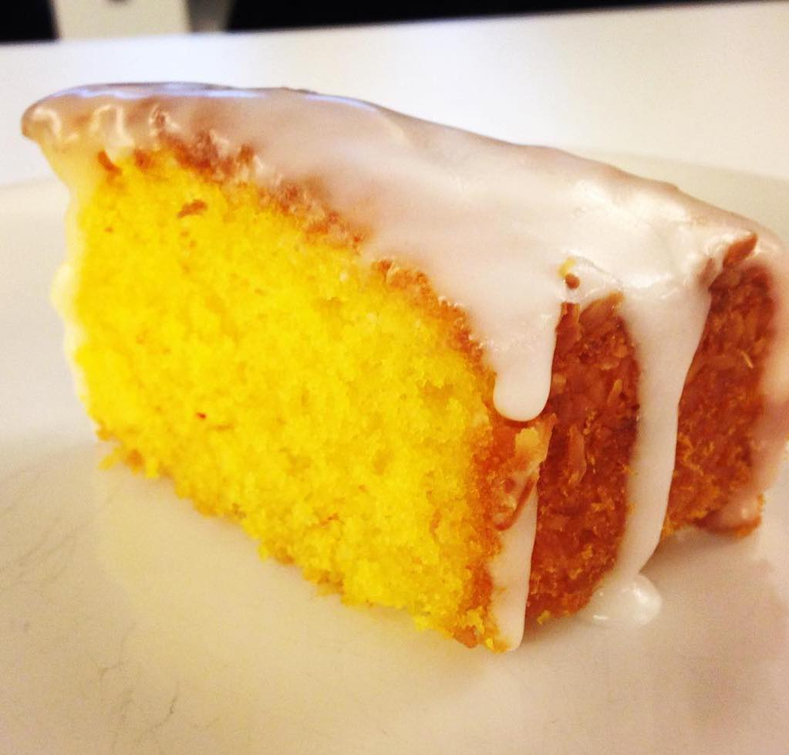

Saffranssockerkaka
- Ca 8 bitar
- matfett till formen
- ströbröd till formen
- 200 g smör eller margarin
- 1/2 g saffran
- 3 dl strösocker
- 2 ägg
- 1 1/2 dl mjölk
- 4 dl vetemjöl (4 dl motsvarar 240 g)
- 2 tsk bakpulver
Gör så här:
Sätt ugnen på 175˚C.
Smörj och bröa en bakform med löstagbar kant, ca 24 cm i diameter.
Smält matfettet.
Stöt saffranet i en mortel med 1 msk av sockret. Blanda det med det smälta matfettet.
Vispa ägg och resten av sockret poröst. Rör ner matfettet och mjölken. Blanda mjölet med bakpulvret och vänd ner det i smeten. Häll smeten i formen.
Grädda i nedre delen av ugnen 40-45 minuter.